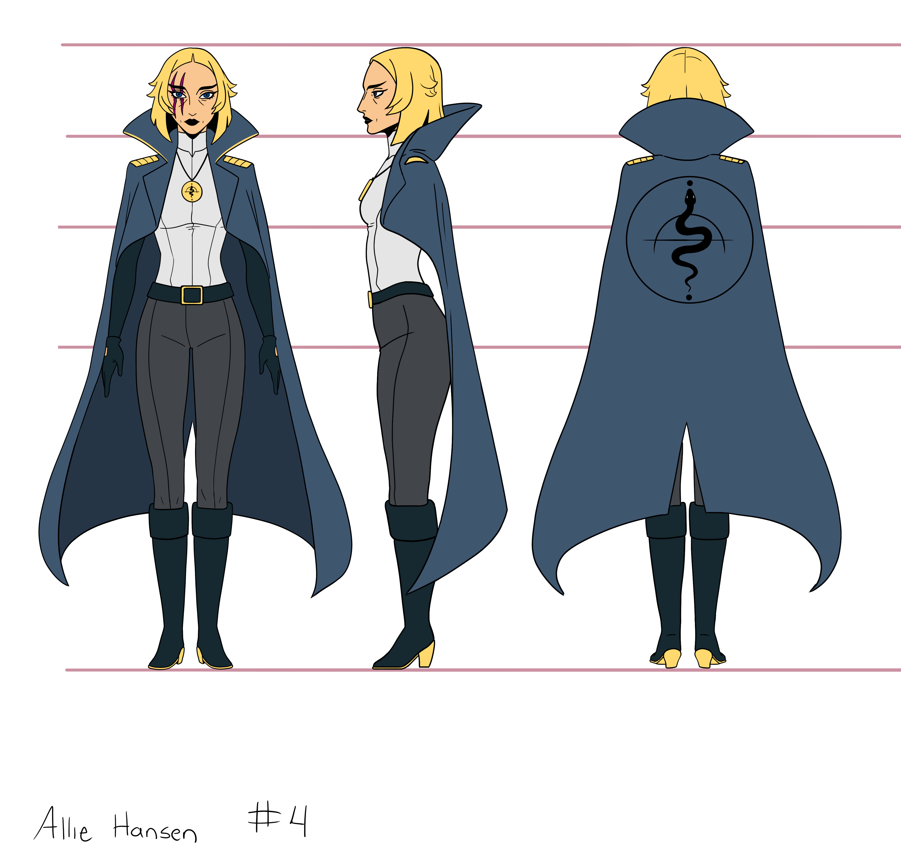
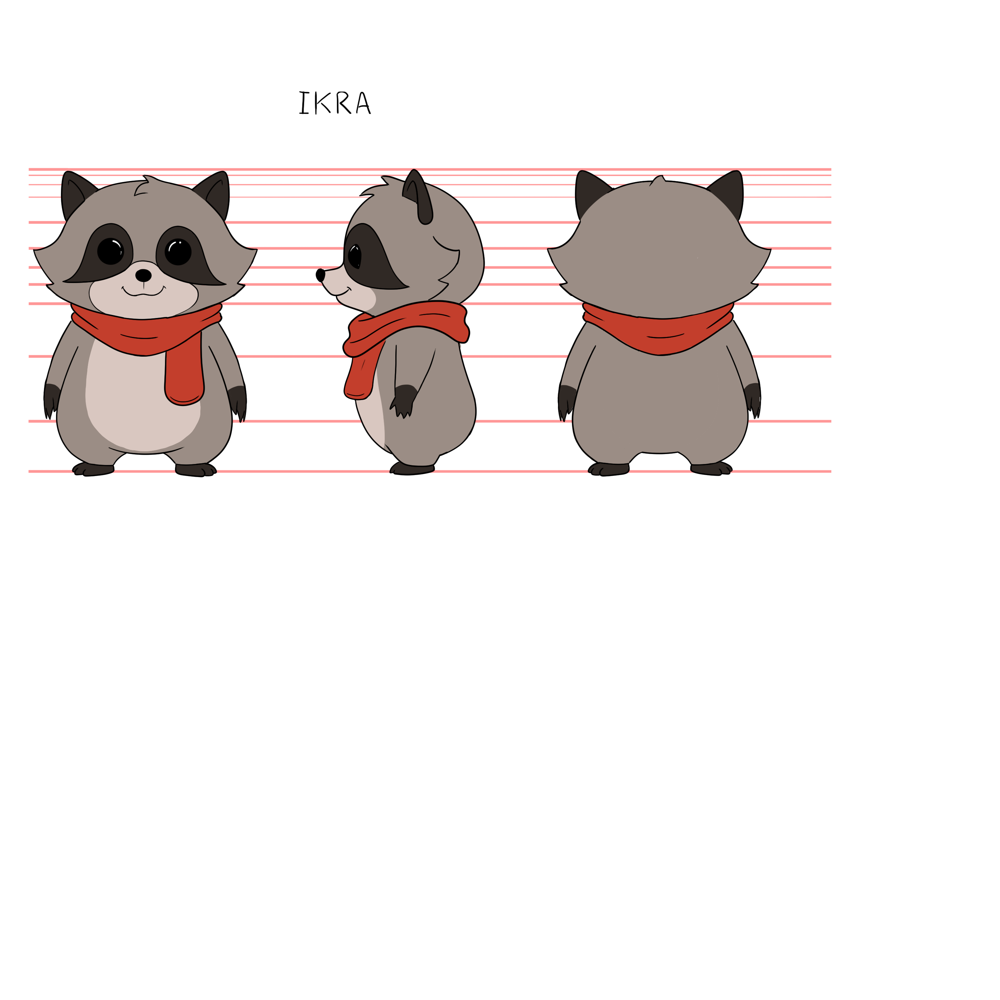
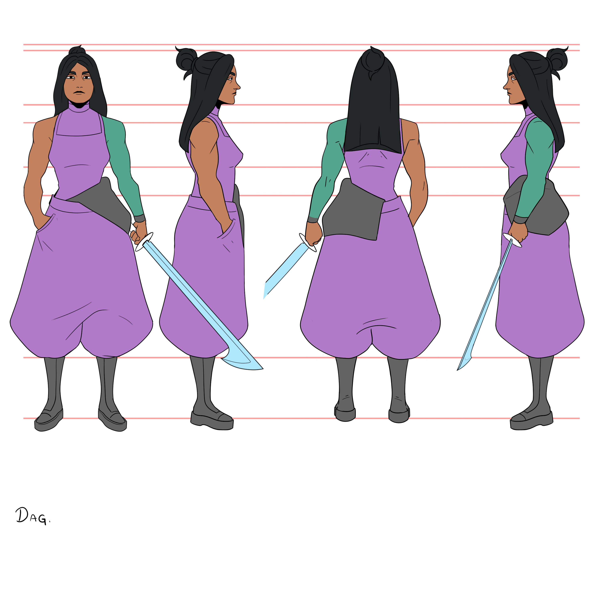
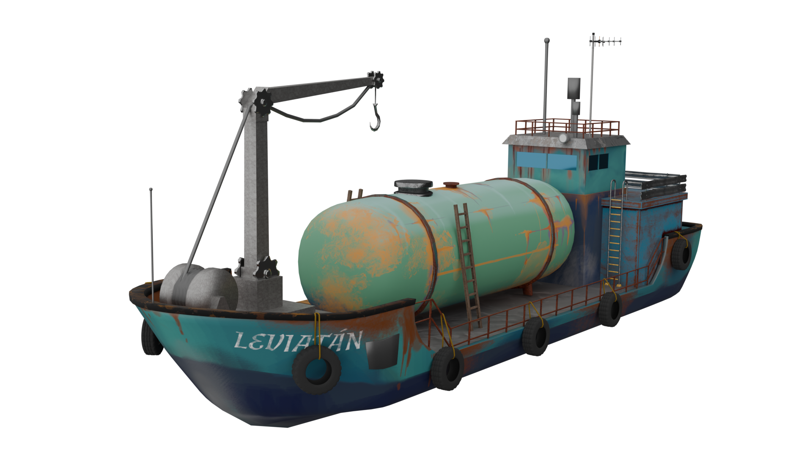
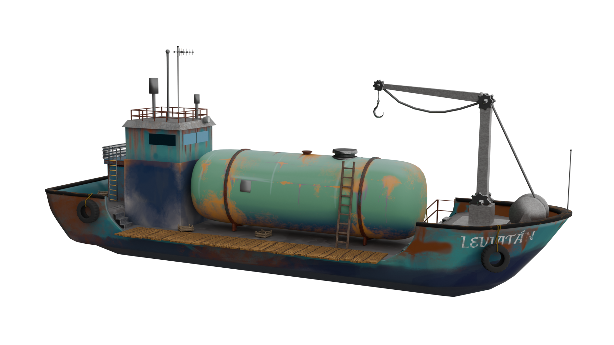
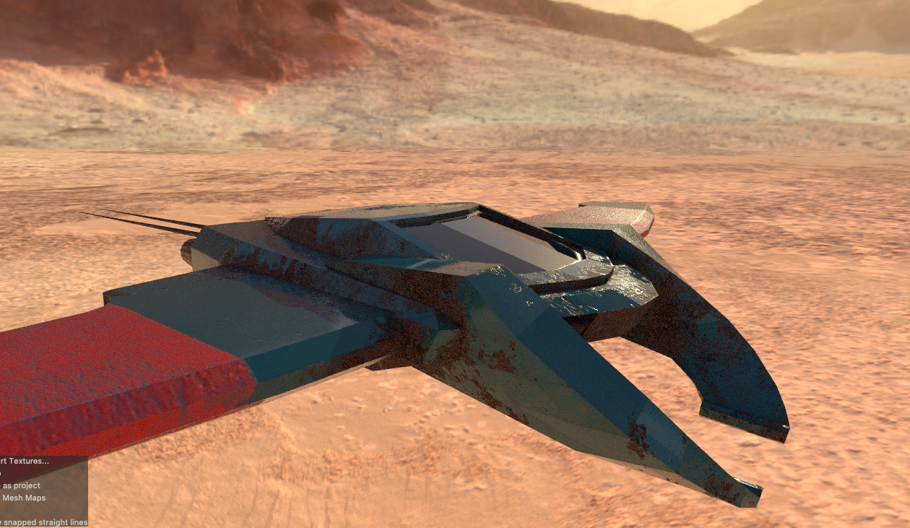
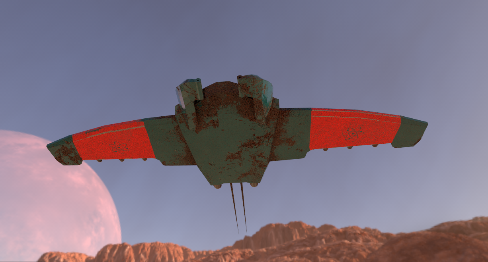
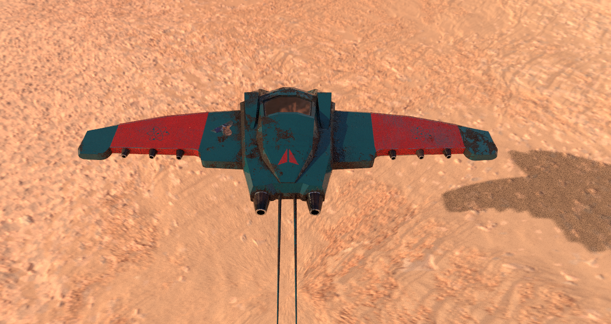

El Edén
Cortometraje de animacion 2D independiente escrito y dirigido por un un servidor. diseñado para convertirse en una web serie de 10 episodios
Las actividades realizadas para la realización de este proyecto son: Diseño de personajes, diseño de escenarios, storyboard, rough animation, animación 2D, animacion 3D, modelado 3D, Texturizado 3D, Rendering y composicion visual. (Personajes y secuencias protegidas por derechos de autor en INDAUTOR)
Trabajo








×